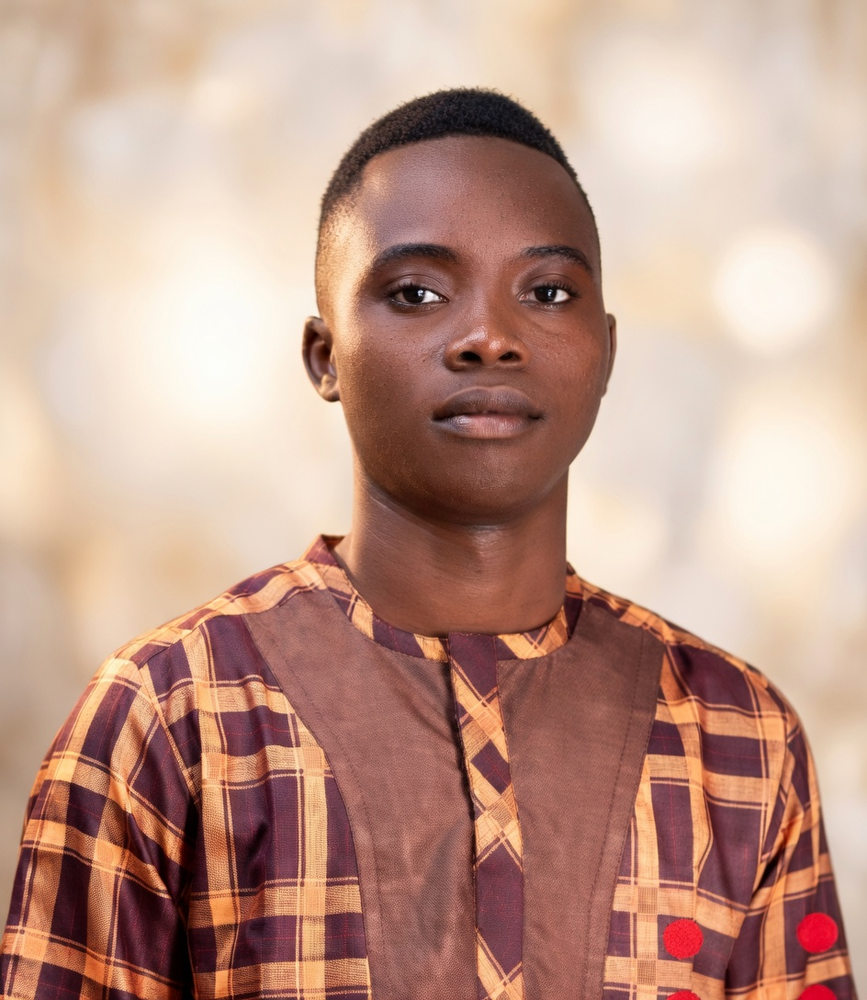
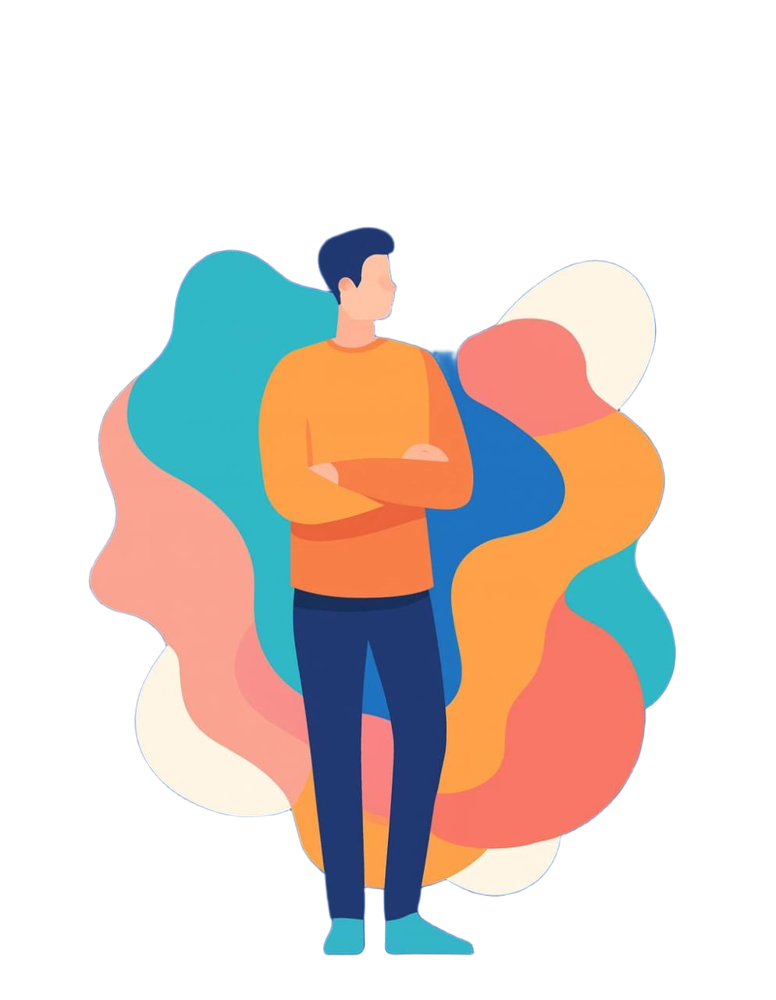
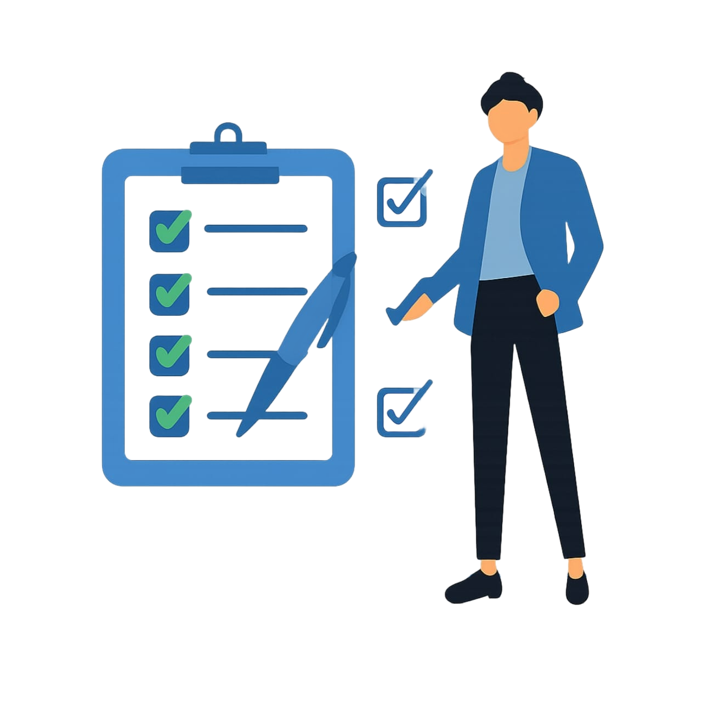
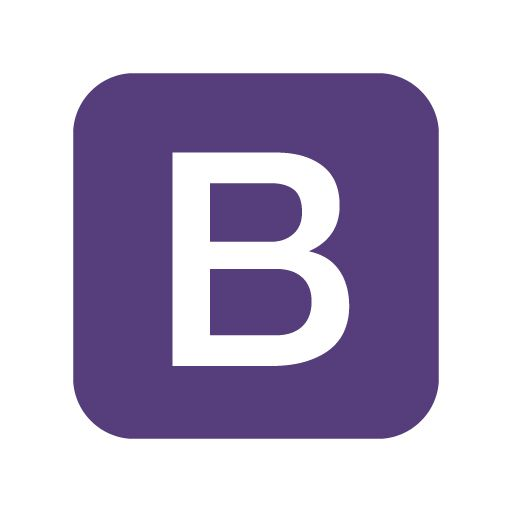
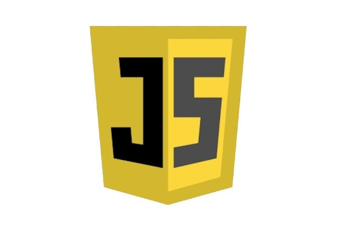
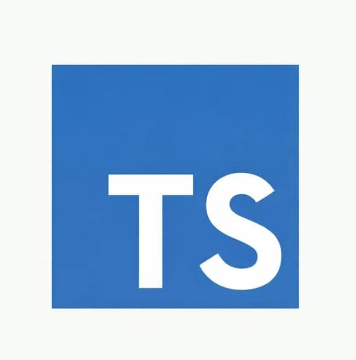
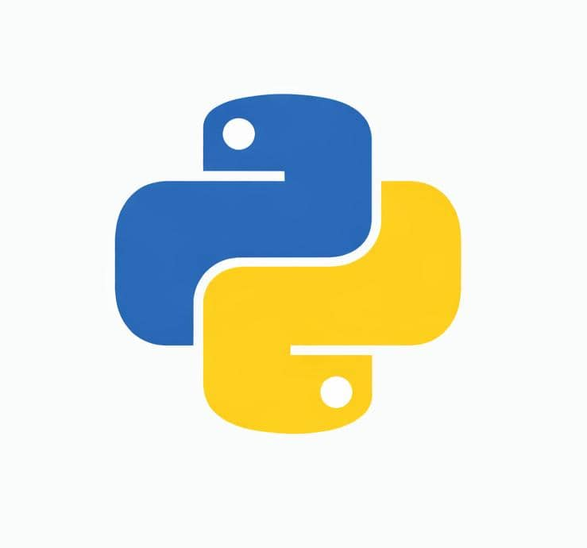

I'M HERE FOR YOU

Je suis Epiphane SEMESSA , un ingénieur dédié à rendre
le monde meilleur , ligne de code par ligne.
Engage-moi
Je possède un diplôme professionnel en informatique et télécommunications, et je me spécialise dans la conception d’API, d’applications web et de bureau, ainsi que dans les tests de logiciels. J’aime travailler en équipe et je peux apprendre et appliquer rapidement de nouvelles technologies. Je suis très efficace et dynamique, rigoureux dans mon travail et discipliné dans tout ce que je fais. L’IA est ma deuxième passion après le génie logiciel. Concevoir des solutions numériques sophistiquées pour le bien-être des personnes et de la population mondiale est mon objectif. Voir mes semblables heureux et apprécier ce que je fais me rend heureux et me donne la force de continuer mon combat. Mes loisirs incluent les voyages, les jeux vidéo, le manga, les jeux d’équipe comme le basket-ball et le handball, la musique, le sprint et les cryptomonnaies.

J’ai une vaste expérience dans les technologies suivantes :

BOOTSTRAP

JAVASCRIPT

MANUSCRIPT

PYTHON